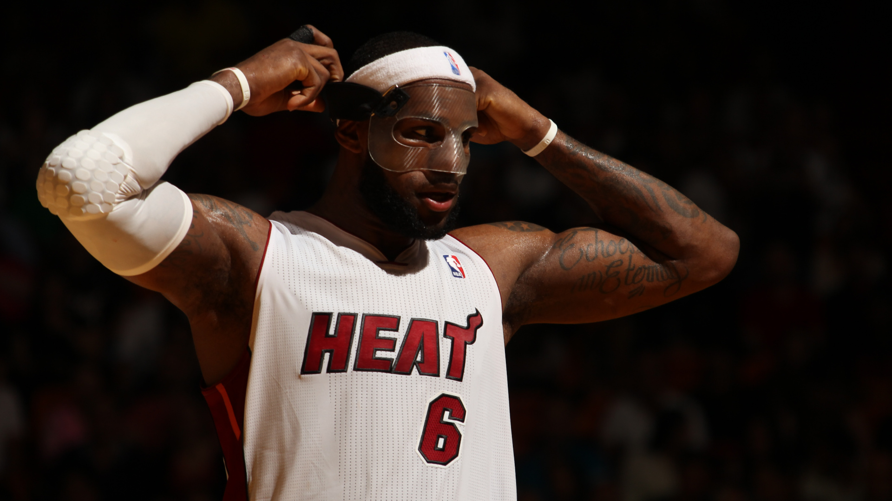
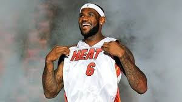
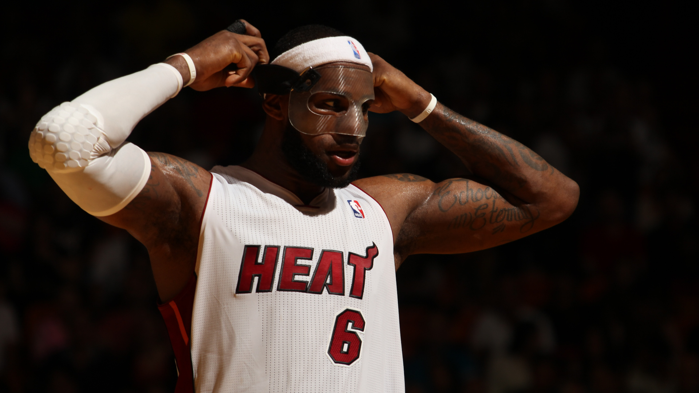
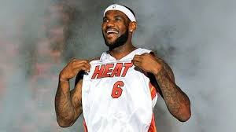

Llega la temporada 2010-11 y LeBron James era el agente libre mas cotizado habiendo rumores que lo situaban en Bulls, Nueva York, Cavaliers nuevamente y Miami que fue donde se termino quedando para formar un Big Three descomunal con sus amigos Dwyane Wade y Chris Bosh. Al estar retirado el dorsal 23 en honor a Michael Jordan aun que no haya jugado en el Heat, el King eligió llevar el dorsal número 6 ya que era el número que llevaba en los partidos cuando representaba a EEUU y también habia sido utilizado por uno de sus ídolos, Julius Erving. El primer año quedan segundos de conferencia con un equipo que le faltaba solidificarse. Lebron terminó con promedios de 26.7 pts, 7.5 rebotes y 7 asistencias. Llegan los playoffs y lograron eliminar a Philadelphia 76ers (4-1), Boston Celtics (4-1) y en finales de conferencia a Chicago Bulls con el MVP de la temporada regular, Derrick Rose (4-1). Los esperan unos Mavericks con hambre de gloria liderados por un tal Dirk Nowitzki. LeBron hizo un bajon promediando solo 17.8 pts en 43 minutos por partido y los Heat fueron derrotados 4-2. En la temporada 2011-12, los Miami Heat quedaron en el segundo puesto de conferencia nuevamente y LeBron James luego del golpe de moral que recibió por parte de Dallas la temporada pasada promedió 27.1 pts, 7.9 rebotes y 6.2 asistencia lo que conllevó a que gane su 3° MVP de la Temporada Regular. Una vez mas en los playoffs vencieron a los Knicks de Nueva York (4-1), Indiana Pacers (4-2), y en las finales contra unos poderosos Boston Celtics, LeBron en el juego seis encestó 45 pts y capturó 15 rebotes sumado a sus 5 asistencias para forzar el juego siete que se quedo para el Heat estando nuevamente en una final de NBA. Se enfrentaban a unos Oklahoma City Thunder con una plantilla repleta de estrellas novatas pero estrellas en fin. Gano el Heat 4-1 y el King en el ultimo partido logro un fantastico triple-doble de 26pts, 13 asist y 11 rebotes logrando asi su primer anillo y como no, su primer MVP de las Finales de la NBA. Temporada 2012-13, LeBron James se convirtió en el jugador mas joven en llegar a los 20.000 puntos, 5.000 rebotes y 5.000 asistencias. Ganó el MVP de la Temporada por cuarta vez consiguiendo con su equipo una racha de 27 partidos seguidos sin perder. En los playoffs, Miami barrió 4-0 a Milwauckee Bucks, vencieron 4-1 a los Chicago Bulls y en las finales de conferencia vencieron muy forzados a los Indiana Pacers (4-3). En las finales aguardaban los Spurs, de Manu Ginobili, Tony Parker, Tim Duncan, Gregg Popovich y compañía. En unas finales tremendas los del Miami forzan el séptimo juego con triple expectacular de Ray Allen siendo uno de los mas icónicos de la historia. En último juego, en el decisivo el King convirtió 32 puntos y salieron victoriosos los del Heat y Lebron nuevamente el MVP de las Finales. Tras su segundo anillo, en la Temporada 2013-14 LeBron James comienza muy bien la temporada siendo candidato al MVP y superando su récord de anotación estableciendo 61 puntos antes los Charlotte Bobcats. Llegan los playoffs, barren a los Bobcats(4-0), eliminan a los Nets(4-1) y en seis partidos vencieron a los Pacers en las finales de conferencia llegando nuevamente a las Finales de la NBA. Mismo rival que el año pasado, San Antonio Spurs solo que esta vez el resultado iba a ser distinto. Miami cae 4-1 ante los siempre correctos Spurs y ahi termina el sueño del King. LeBron se convierte en agente libre y decide volver a su hogar, Cleaveland Cavaliers.
MIAMI HEAT: POR EL CAMPEONATO

 


